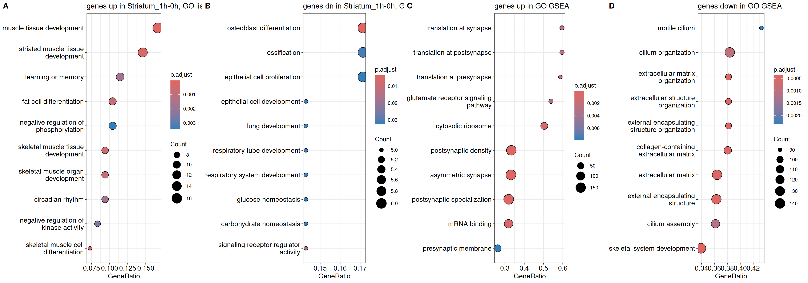
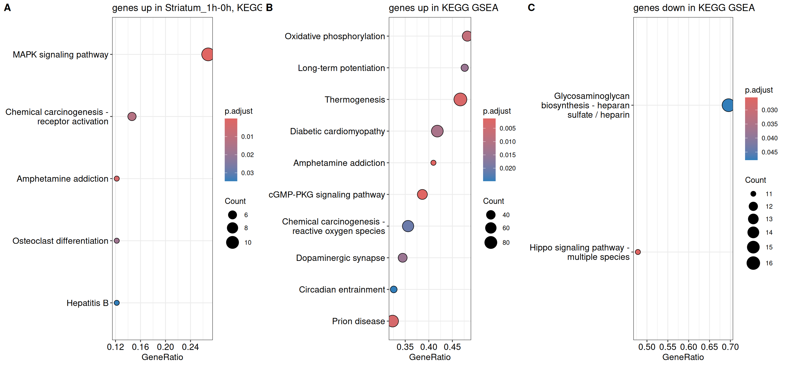
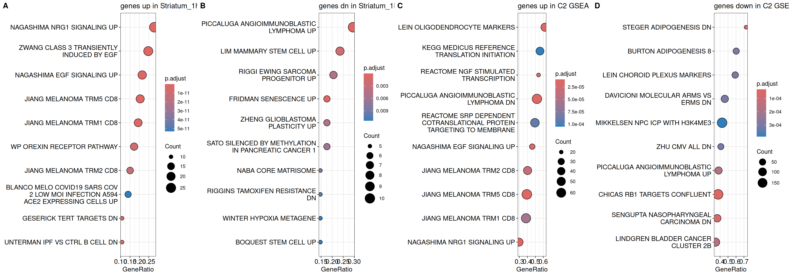
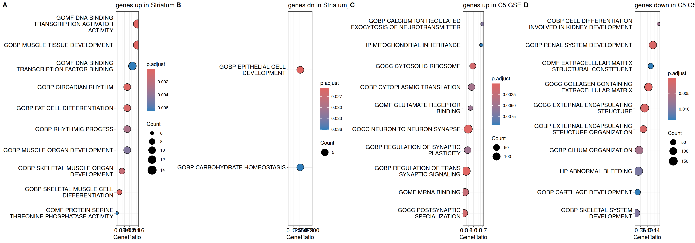
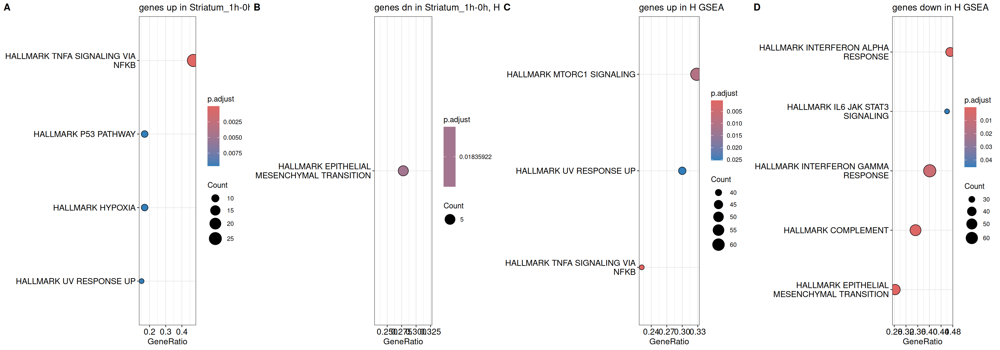
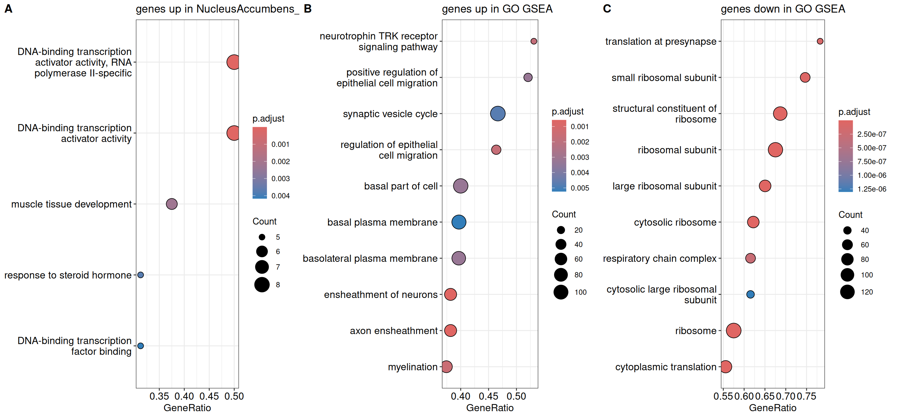
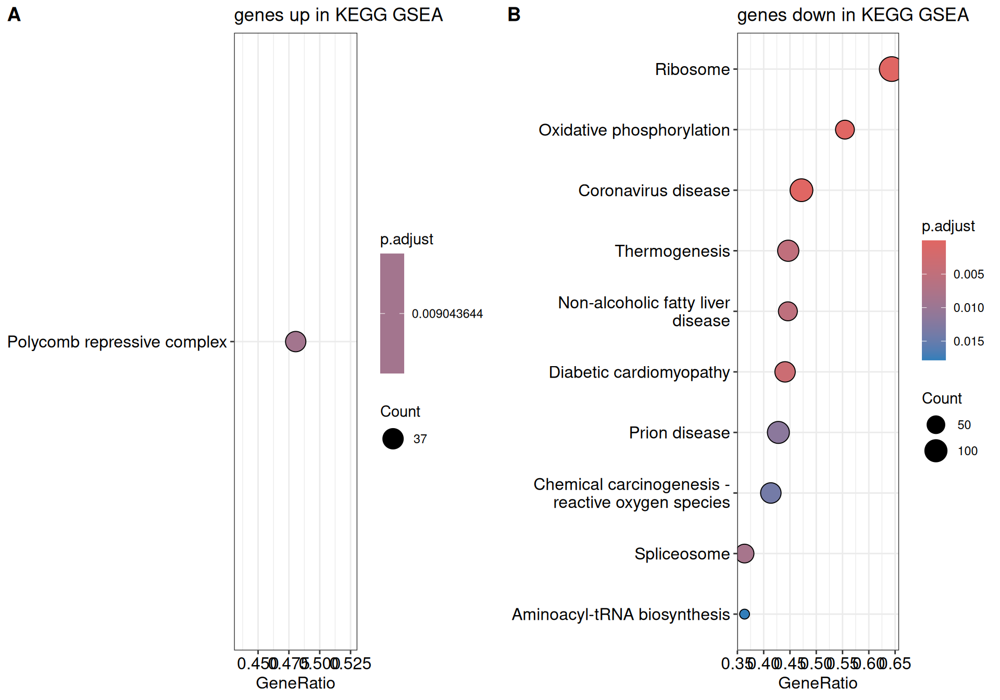
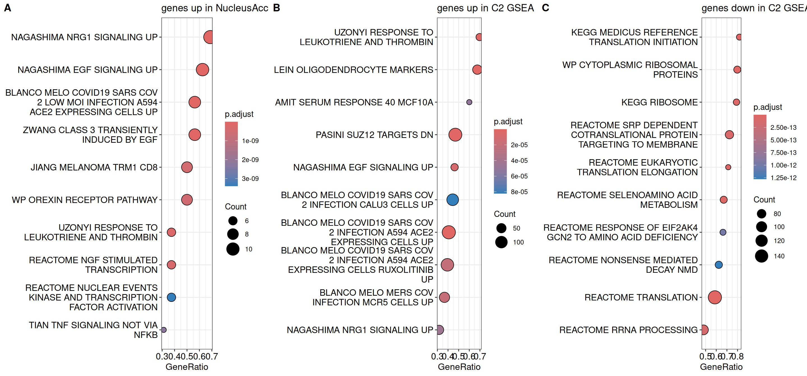
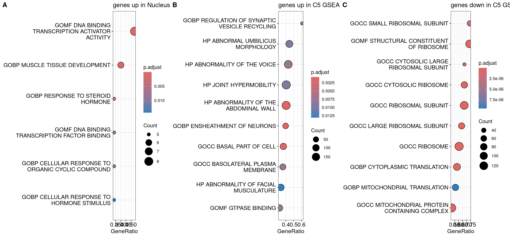
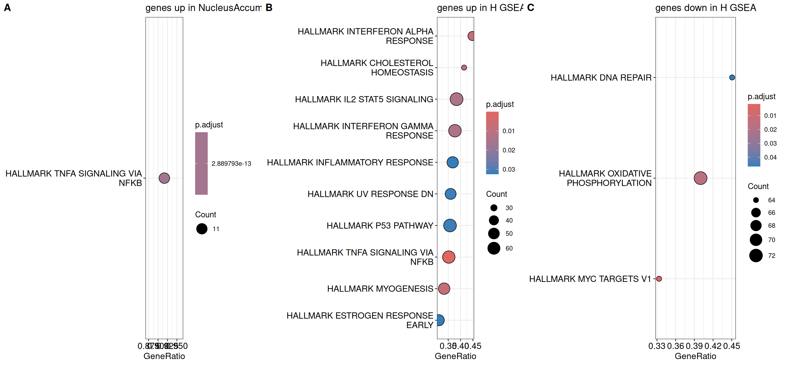

This pipeline output recapitulates a portion of the analysis described in
D Mukherjee, et al. 2021. Egr2 induction in spiny projection neurons
of the ventrolateral striatum contributes to cocaine place preference in mice.
eLife 10:e65228 (PMID: 33724178)
Enrichment analysis was performed on sheets with names like ’_tag_gene_table’ or ‘tag_TT’ in ../data/accute_cocaine_dge_1hv0h.xlsx. More details below.
For all enrichment analyses, genes and categories were considered significant for FDR < 0.05. For list enrichment, genes were required to show absolute log2 fold change greater than 0. Where relevant, enrichment analyses were also carried out on gene rankings based on likelihood ratios signed in the same direction as log fold changes. Enrichment results were only retained if there were at least 3 genes supporting the enrichment. Gene Ontology list enrichment analysis was carried out using gene symbols from gene differential expression tables. KEGG pathway enrichment analysis was carried out using the species term mmu after conversion of gene symbols to NCBI gene IDs using the organism-specific R library org.Mm.eg.db.Analysis of the Molecular Signatures Database was carried out using the organism search string: mouse.Note that where list enrichment analyses involved fewer than 10 genes, the top 100 most significant gene symbols were analysed instead and further divided into up- and down-regulated gene lists. Up to 10 most significant enriched categories are shown in dot-plots below and accompanying pdf files with the prefix enr_, but full enrichment results, including genes constituting the enrichment, are found in accompanying Excel files with the prefix enr_.










## R version 4.5.0 (2025-04-11)
## Platform: x86_64-pc-linux-gnu
## Running under: Ubuntu 24.04.2 LTS
##
## Matrix products: default
## BLAS: /usr/lib/x86_64-linux-gnu/blas/libblas.so.3.12.0
## LAPACK: /usr/lib/x86_64-linux-gnu/lapack/liblapack.so.3.12.0 LAPACK version 3.12.0
##
## locale:
## [1] C
##
## time zone: Europe/London
## tzcode source: system (glibc)
##
## attached base packages:
## [1] stats4 stats graphics grDevices utils datasets methods
## [8] base
##
## other attached packages:
## [1] callr_3.7.6 retry_0.1.1 msigdbr_24.1.0
## [4] org.Mm.eg.db_3.21.0 AnnotationDbi_1.70.0 IRanges_2.42.0
## [7] S4Vectors_0.46.0 Biobase_2.68.0 BiocGenerics_0.54.0
## [10] generics_0.1.4 enrichplot_1.28.2 DOSE_4.2.0
## [13] clusterProfiler_4.16.0 ggrastr_1.0.2 plotly_4.10.4
## [16] openxlsx_4.2.8 lubridate_1.9.3 forcats_1.0.0
## [19] stringr_1.5.1 dplyr_1.1.4 purrr_1.0.4
## [22] readr_2.1.5 tidyr_1.3.1 tibble_3.3.0
## [25] ggplot2_3.5.2 tidyverse_2.0.0 data.table_1.17.4
##
## loaded via a namespace (and not attached):
## [1] RColorBrewer_1.1-3 jsonlite_2.0.0 magrittr_2.0.3
## [4] ggtangle_0.0.6 ggbeeswarm_0.7.2 farver_2.1.2
## [7] rmarkdown_2.29 fs_1.6.6 vctrs_0.6.5
## [10] memoise_2.0.1 ggtree_3.16.0 rstatix_0.7.2
## [13] htmltools_0.5.8.1 curl_6.3.0 broom_1.0.5
## [16] gridGraphics_0.5-1 sass_0.4.10 bslib_0.9.0
## [19] htmlwidgets_1.6.4 plyr_1.8.9 cachem_1.1.0
## [22] igraph_2.1.4 lifecycle_1.0.4 pkgconfig_2.0.3
## [25] Matrix_1.7-3 R6_2.6.1 fastmap_1.2.0
## [28] gson_0.1.0 GenomeInfoDbData_1.2.14 digest_0.6.37
## [31] aplot_0.2.6 colorspace_2.1-1 patchwork_1.3.0
## [34] ps_1.7.6 RSQLite_2.4.1 ggpubr_0.6.0
## [37] labeling_0.4.3 timechange_0.3.0 abind_1.4-8
## [40] httr_1.4.7 compiler_4.5.0 bit64_4.6.0-1
## [43] withr_3.0.2 backports_1.5.0 BiocParallel_1.42.1
## [46] carData_3.0-5 DBI_1.2.3 R.utils_2.13.0
## [49] ggsignif_0.6.4 tools_4.5.0 vipor_0.4.7
## [52] beeswarm_0.4.0 ape_5.8-1 zip_2.3.1
## [55] R.oo_1.26.0 glue_1.8.0 nlme_3.1-168
## [58] GOSemSim_2.34.0 grid_4.5.0 reshape2_1.4.4
## [61] fgsea_1.34.0 gtable_0.3.6 tzdb_0.5.0
## [64] R.methodsS3_1.8.2 hms_1.1.3 car_3.1-2
## [67] XVector_0.48.0 ggrepel_0.9.6 pillar_1.10.2
## [70] yulab.utils_0.2.0 babelgene_22.9 splines_4.5.0
## [73] treeio_1.32.0 lattice_0.22-5 bit_4.6.0
## [76] tidyselect_1.2.1 GO.db_3.21.0 Biostrings_2.76.0
## [79] knitr_1.50 xfun_0.52 stringi_1.8.7
## [82] UCSC.utils_1.4.0 lazyeval_0.2.2 ggfun_0.1.8
## [85] yaml_2.3.10 evaluate_1.0.3 codetools_0.2-20
## [88] qvalue_2.40.0 ggplotify_0.1.2 cli_3.6.5
## [91] processx_3.8.3 jquerylib_0.1.4 dichromat_2.0-0.1
## [94] Rcpp_1.0.14 GenomeInfoDb_1.44.0 png_0.1-8
## [97] parallel_4.5.0 assertthat_0.2.1 blob_1.2.4
## [100] viridisLite_0.4.2 tidytree_0.4.6 scales_1.4.0
## [103] crayon_1.5.3 rlang_1.1.6 cowplot_1.1.3
## [106] fastmatch_1.1-6 KEGGREST_1.48.0